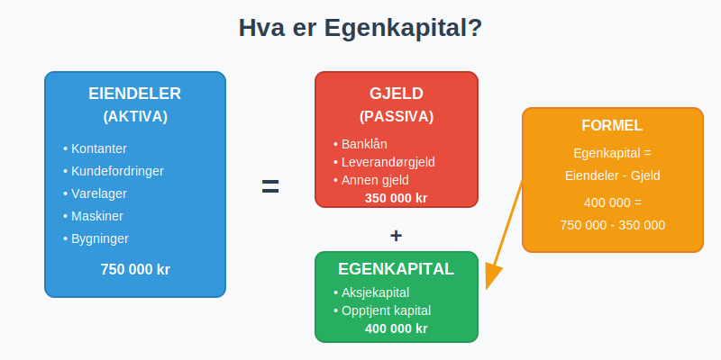
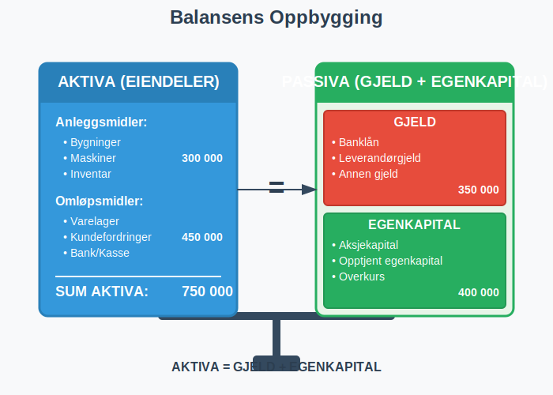
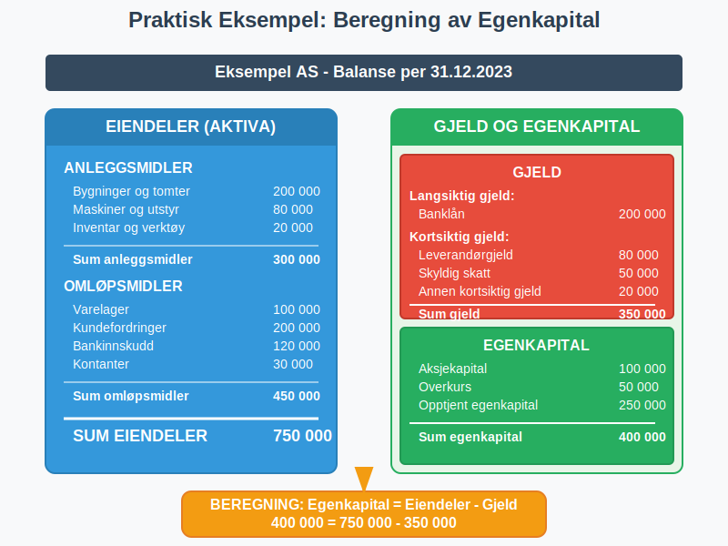

Egenkapital er den delen av et selskaps totale kapital som tilhører eierne. Som en fundamental form for finanskapital, representerer egenkapital eiernes netto formue i selskapet og beregnes som forskjellen mellom selskapets eiendeler (aktiva) og gjeld (passiva). Egenkapital er et grunnleggende begrep i regnskap og finansiell analyse. Styret har ansvaret for å sikre forsvarlig egenkapital og likviditet i selskapet.
For en fullstendig oversikt over finansieringsformer, se Hva er Finansiering?.

Definisjon og Grunnleggende Forståelse
Egenkapital kan defineres på flere måter:
Regnskapsmessig Definisjon
Egenkapital = Eiendeler (Aktiva) - Gjeld (Passiva)
Dette er den mest grunnleggende formelen som viser at egenkapital er det som blir igjen når alle forpliktelser er trukket fra alle eiendeler.
Økonomisk Perspektiv
Fra et økonomisk perspektiv representerer egenkapital:
- Eiernes investering i selskapet
- Akkumulert overskudd som ikke er utbetalt som utbytte
- Selskapets netto formue
- Eiernes krav på selskapets eiendeler

Egenkapitalens Komponenter
Egenkapital består av flere hovedkomponenter som vises i balansen:
1. Aksjekapital
For aksjeselskaper er aksjekapital den grunnleggende komponenten:
- Innskutt kapital fra aksjonærene
- Minimum 30 000 kr for AS
- Representerer eiernes direkte investering
2. Opptjent Egenkapital
For en grundig gjennomgang av opptjent egenkapital, se vår egen artikkel Opptjent egenkapital.
3. Overkurs
- Beløp betalt utover pålydende ved aksjeemisjoner
- Oppstår når aksjer selges til høyere pris enn pålydende verdi
- Viser markedets verdsetting av selskapet
4. Andre Egenkapitalposter
- Fond for vurderingsforskjeller
- Gavefond
- Annen innskutt egenkapital
Beregning av Egenkapital
La oss se på praktiske eksempler på hvordan egenkapital beregnes:
Eksempel 1: Enkelt Aksjeselskap
| Balanseposter | Beløp (NOK) |
|---|---|
| EIENDELER (AKTIVA) | |
| Kontanter | 150 000 |
| Kundefordringer | 200 000 |
| Varelager | 100 000 |
| Maskiner og utstyr | 300 000 |
| Sum eiendeler | 750 000 |
| GJELD (PASSIVA) | |
| Leverandørgjeld | 80 000 |
| Banklån | 200 000 |
| Annen kortsiktig gjeld | 70 000 |
| Sum gjeld | 350 000 |
| EGENKAPITAL | |
| Aksjekapital | 100 000 |
| Opptjent egenkapital | 300 000 |
| Sum egenkapital | 400 000 |
| Sum gjeld og egenkapital | 750 000 |
Beregning: Egenkapital = 750 000 - 350 000 = 400 000 NOK

Egenkapitalandel og Nøkkeltall
Egenkapitalandel
Egenkapitalandel er et viktig nøkkeltall som viser hvor stor andel av selskapets totale kapital som kommer fra eierne:
Egenkapitalandel = (Egenkapital / Sum eiendeler) × 100%
I eksemplet over: (400 000 / 750 000) × 100% = 53,3%
Vurdering av Egenkapitalandel
| Egenkapitalandel | Vurdering | Betydning |
|---|---|---|
| Over 40% | Meget god | Høy finansiell stabilitet |
| 30-40% | God | Akseptabel soliditet |
| 20-30% | Middels | Noe risiko, bør overvåkes |
| 10-20% | Svak | Høy gjeldsgrad, finansiell risiko |
| Under 10% | Kritisk | Meget høy risiko for konkurs |
Forskjellen mellom Egenkapital og Fremmedkapital
Det er viktig å forstå forskjellen mellom egenkapital og fremmedkapital:
Egenkapital
- Tilhører eierne
- Ingen fast forpliktelse til tilbakebetaling
- Eierne bærer risikoen for tap
- Gir rett til utbytte når selskapet går med overskudd
- Permanent kapital
Fremmedkapital (Gjeld)
- Tilhører kreditorer
- Fast forpliktelse til tilbakebetaling
- Kreditorene har prioritet ved konkurs
- Fast rente eller avkastning
- Tidsbegrenset kapital
For en detaljert gjennomgang av gjeldsbegrepet, se vår omfattende artikkel Hva er gjeld?.

Egenkapitalens Rolle i Ulike Selskapsformer
Aksjeselskap (AS)
- Egenkapital delt inn i aksjer
- Minimum 30 000 kr i aksjekapital
- Begrenset ansvar for aksjonærene
- Kan ha ulike aksjeklasser
Enkeltpersonforetak
- Egenkapital = eierens personlige investering
- Ubegrenset personlig ansvar
- Enklere struktur enn aksjeselskap
Ansvarlig Selskap (ANS)
- Egenkapital fordelt mellom deltakerne
- Solidarisk ansvar for alle deltakere
- Mer kompleks enn enkeltpersonforetak
Faktorer som Påvirker Egenkapital
Positive Faktorer (Øker Egenkapital)
- Overskudd fra driften
- Kapitalinnskudd fra eierne
- Verdiøkning på eiendeler
- Overkurs ved aksjeemisjoner
Negative Faktorer (Reduserer Egenkapital)
- Underskudd fra driften
- Utbytteutbetalinger til eierne (begrenset av maskimalt utbytte)
- Verdifall på eiendeler
- Tap på investeringer
Egenkapital og Finansiering
Egenfinansiering
Selvfinansiering skjer når selskapet finansierer vekst og investeringer med:
- Tilbakeholdt overskudd
- Avskrivninger som ikke krever kontantutbetaling
- Salg av eiendeler
Fordeler med Høy Egenkapital
- Finansiell stabilitet og lavere risiko
- Større handlingsrom i vanskelige tider
- Bedre lånemuligheter fra banker
- Lavere finanskostnader
- Større investeringskapasitet
Ulemper med Høy Egenkapital
- Lavere avkastning på egenkapital (ROE)
- Mindre gearing-effekt
- Potensielt ineffektiv kapitalbruk
Egenkapital i Regnskapsanalyse
Viktige Nøkkeltall
1. Avkastning på Egenkapital (ROE) Egenkapitalrentabilitet måler hvor effektivt selskapet bruker eiernes kapital til å generere overskudd: ROE = (Årsresultat / Gjennomsnittlig egenkapital) × 100%
2. Egenkapitalandel Egenkapitalandel = (Egenkapital / Sum eiendeler) × 100%
3. Gjeldsgrad Gjeldsgrad = Gjeld / Egenkapital
4. Soliditetsgrad Soliditetsgrad = Egenkapital / Sum eiendeler
Analyse av Egenkapitalutvikling
Ved analyse av egenkapital bør man se på:
- Utviklingen over tid - øker eller synker egenkapitalen?
- Sammenligning med bransjen - hvordan står selskapet i forhold til konkurrentene?
- Årsaker til endringer - kommer endringene fra drift eller finansiering?
Egenkapital og Skatt
Skattemessige Aspekter
- Utbytte fra egenkapital beskattes som kapitalinntekt
- Gevinst ved salg av aksjer beskattes som kapitalinntekt
- Tap ved salg kan trekkes fra i kapitalinntekt
Utbytteskatt
- 22% skatt på utbytte over skjermingsfradrag
- Skjermingsfradrag basert på aksjekapital og risikofri rente
- Gunstigere enn lønnsskatt for høye inntekter
Praktiske Råd for Egenkapitalstyring
For Gründere og Små Bedrifter
- Start med tilstrekkelig kapital - ikke bare minimum
- Reinvester overskudd for å bygge egenkapital
- Overvåk egenkapitalandelen regelmessig
- Planlegg kapitalinnhenting i god tid
For Etablerte Selskaper
- Balancer mellom utbytte og reinvestering (innenfor maskimalt utbytte)
- Vurder emisjoner ved store investeringer
- Optimaliser kapitalstrukturen
- Kommuniser egenkapitalstrategi til investorer
Egenkapital og Konkursrisiko
For en grundig gjennomgang av akkumulerte tap som ikke er dekket av egenkapital (udekket tap), se artikkelen Udekket tap.
Negativ Egenkapital
Når gjeld overstiger eiendeler, oppstår negativ egenkapital:
- Selskapet er teknisk konkurs
- Styret må vurdere fortsatt drift
- Kan kreve kapitalinnhenting eller avvikling
Varslingsplikter
Ved lav egenkapital har styret plikt til å:
- Innkalle generalforsamling
- Vurdere selskapets situasjon
- Iverksette tiltak for å bedre situasjonen
Moderne Finansieringsformer og Egenkapital
Crowdfunding og Egenkapital
Crowdfunding kan påvirke egenkapital på ulike måter:
- Equity crowdfunding øker egenkapital direkte
- Reward-based crowdfunding kan gi inntekter som styrker egenkapital
- Debt crowdfunding øker gjeld, ikke egenkapital
Alternative Finansieringskilder
- Crowdlending - lån som øker gjeld
- Venturekapital - egenkapitalinvestering
- Aksjonærlån - fleksibel finansiering
Egenkapital i Ulike Bransjer
Kapitalintensive Bransjer
- Industri og produksjon: Høyere egenkapitalkrav
- Eiendom: Ofte lavere egenkapitalandel
- Teknologi: Varierende, avhengig av vekstfase
Servicebransjer
- Konsulentvirksomhet: Ofte høy egenkapitalandel
- Handel: Middels egenkapitalkrav
- Transport: Varierende avhengig av kapitalintensitet
Internasjonale Perspektiver
IFRS vs. Norske Regnskapsregler
- IFRS: Mer detaljerte krav til egenkapitalrapportering
- Norske regler: Enklere for små og mellomstore bedrifter
- Sammenlignbarhet: Viktig ved internasjonal virksomhet
Egenkapitalkrav i Ulike Land
- Norge: Minimum 30 000 kr for AS
- Sverige: 25 000 SEK for AB
- Danmark: 40 000 DKK for ApS
Fremtidige Trender
Digitalisering og Egenkapital
- Automatisert rapportering gjør egenkapitaloppfølging enklere
- Sanntidsdata gir bedre kontroll
- AI-basert analyse kan forutsi egenkapitalutvikling
Bærekraft og ESG
- ESG-faktorer påvirker investorers vurdering av egenkapital
- Bærekraftige investeringer kan kreve høyere egenkapital
- Rapporteringskrav øker for bærekraftsinformasjon, inkludert SFDR-regulering for finansmarkedsdeltakere
Relaterte Begreper og Konsepter
For å forstå egenkapital fullt ut, bør du også sette deg inn i:
- Aktiva - Selskapets eiendeler
- Balanse - Oversikt over eiendeler, gjeld og egenkapital
- Formuesverdi - Verdivurdering av eiendeler og netto formue
- Aksjekapital - Grunnleggende egenkapital i aksjeselskaper
- Aksjeselskap - Selskapsform med aksjebasert egenkapital
- Aksjer - Eierandeler som representerer egenkapital
- Avkastning - Avkastning på egenkapital
- Egenkapitalrentabilitet - Måling av avkastning på egenkapital
- Egenfinansiering - Finansiering med egenkapital
- Sysselsatt kapital - Total kapital aktivt brukt i virksomheten
- Regnskap - Regnskapssystem som viser egenkapital
Egenkapital er et fundamentalt begrep som påvirker alle aspekter av bedriftsdrift og finansiell planlegging. En solid forståelse av egenkapital er essensielt for alle som driver eller planlegger å drive virksomhet.